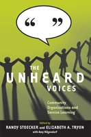

Community organizations reveal what service learning is—and what it should be
Community organizations reveal what service learning is—and what it should be


 Community organizations reveal what service learning is—and what it should be
Community organizations reveal what service learning is—and what it should be

|  |
The Unheard VoicesCommunity Organizations and Service Learningedited by Randy Stoecker and Elizabeth A. Tryon with Amy Hilgendorfpaper EAN: 978-1-59213-995-8 (ISBN: 1-59213-995-7) |
"The Unheard Voices is one of the most accessible service-learning texts I have read, due in large part to the willingness of the contributors to let the community participants’ voices be heard extensively. This book provides a compelling vision and concrete steps for moving forward in new directions. It is a unique and important contribution to the service-learning literature and one that has the potential to change the discussion about and the future of service learning. In the end, The Unheard Voices will make our programs more effective"
—Stephen Fisher, Professor Emeritus, Emory & Henry College
Service learning has become an institutionalized practice in higher education. Students are sent out to disadvantaged communities to paint, tutor, feed, and help organize communities. But while the students gain from their experiences, the contributors to The Unheard Voices ask, "Does the community?"
This volume explores the impact of service learning on a community, and considers the unequal relationship between the community and the academy. Using eye-opening interviews with community-organization staff members, The Unheard Voices challenges assumptions about the effectiveness of service learning. Chapters offer strong critiques of service learning practices from the lack of adequate training and supervision, to problems of communication and issues of diversity. The book's conclusion offers ways to improve service learning so that future endeavors can be better at meeting the needs of the communities and the students who work in them.
Excerpt available at www.temple.edu/tempress
"How refreshing to finally hear the perspectives of community partners in-depth! The Unheard Voices serves as a valuable wake-up call to the service-learning community to listen to the perspectives of our community partners and to find ways to collaborate with them as co-educators. It not only contains thoughtful analysis but practical recommendations to help transform service-learning practices locally and offers considerations for broader structural changes as well"
—Marie Sandy, Assistant Professor, Educational Policy and Community Studies Department, University of Wisconsin-Milwaukee, and former director of California Campus Compact’s Community Voices Across California Project
"Finally, we have a book that listens to the community voices all too often silenced and unheard. Randy Stoecker and Elizabeth Tryon have given us a first-rate and invaluable text that demonstrates the challenges and possibilities for meaningful transformations in teaching, learning, and research in higher education. They have listened carefully to the communities we purport to serve and work with in order to make good on our rhetorical promises of meaningful change, social justice, and civic engagement. It’s about time."
—Dan W. Butin, Assistant Dean in the School of Education at Cambridge College and author of Rethinking Service-Learning: Embracing the Scholarship of Engagement in Higher Education
"The Unheard Voices [is] both an important contribution to the literature and a breath of fresh air….[a] practical guide to administering more responsible and effective service learning and an important addition to the literature, this is an exceptionally well-organized and clearly written book…. [The book] makes an important contribution to the continued evolution of service learning. Serious considerations of its many insights will hopefully lead to not only continued research on the community perspective, but, to an increasing number of truly collaborative service learning projects and courses that facilitate student learning and serve communities."
—Teachers College Record
"Intriguing… The Unheard Voices [is] an enjoyable and interesting book."
—The Review of Higher Education
"Stoecker and Tryon have started a much-needed discussion about the relationships between service-learning participants and community organizations.... The primary value of this book is its ability to inform scholars and practitioners about the tensions and barriers that can exist between the students participating in service-learning projects and community members, as well as the factors that influence students before they enter the community."
—Journal of Higher Education Outreach and Engagement
"[A] one-of-[a]-kind text in the service learning literature base.... In illuminating the experiences and perspectives of community organizations...Stoecker and Tryon provide service learning educators (in the broadest and most inclusive definition) with a very useful resource for the effective and respectful design and implementation of service learning. If their findings and recommendations therein are taken to heart and seriously, service learning programs will not only look very different but so too will faculty involvement and most importantly, intended benefits to community organizations may actually be realized."
—The Journal of Higher Education
"[T]he book makes a case for the need to attend to the unheard voices in the service learning relationship... The authors accomplished their objectives of voicing the perspectives of the community organizing staff. The authors challenge the existing service learning models that reinforce stereotypes such as the perception of poor communities as helpless and the facade of the models’ effectiveness.... By and large, the book captures the critical areas needed to ensure that service learning perpetuates mutual benefit, good relationships, meaningful change, social justice, civic engagement, and knowledge about community impact in service learning. It also highlights the intricacy of the relationships involved in actualizing service learning at the individual and institutional levels by challenging the models often imposed on community organizers and suggesting ways of customizing the models to fit the needs of those involved."
—Adult Education Quarterly
Preface
1. Unheard Voices: Community Organizations and Service Learning
2. Motivations of Community Organizations for Service Learning
3. Finding the Best Fit: How Organizations
Select Service Learners
4. The Challenge of Short-Term Service
Learning
5. Managing Service Learners: Training, Supervising, and Evaluating
6. The Heart of Partnership: Communication and Relationships
7. Service Learning in Context: The Challenge of Diversity
8. One Director’s Voice
9. Principles for Success in Service Learning— the Three Cs
10. The Community Standards for Service
Learning
Epilogue: The Two Futures of Service Learning
References
Contributors
Index
Randy Stoecker is a Professor in the Department of Community and Environmental Sociology at the University of Wisconsin, with a joint appointment in the UW-Extension Center for Community and Economic Development. He is the author of Research Methods for Community Change: A Project-Based Approach and Defending Community: The Struggle for Alternative Redevelopment in Cedar-Riverside (Temple).
Elizabeth A. Tryon is the Community-Based Learning Coordinator at the Morgridge Center for Public Service based within the School of Human Ecology at the University of Wisconsin-Madison. Previously she was a community partner specialist for the Human Issues Studies Program at Edgewood College’s School of Integrative Studies, Madison, Wisconsin.
Amy Hilgendor is a doctoral student at the University of Wisconsin-Madison in Human Development and Family Studies.
Education
Community Organizing and Social Movements
Sociology
© 2015 Temple University. All Rights Reserved. This page: http://www.temple.edu/tempress/titles/2023_reg.html.